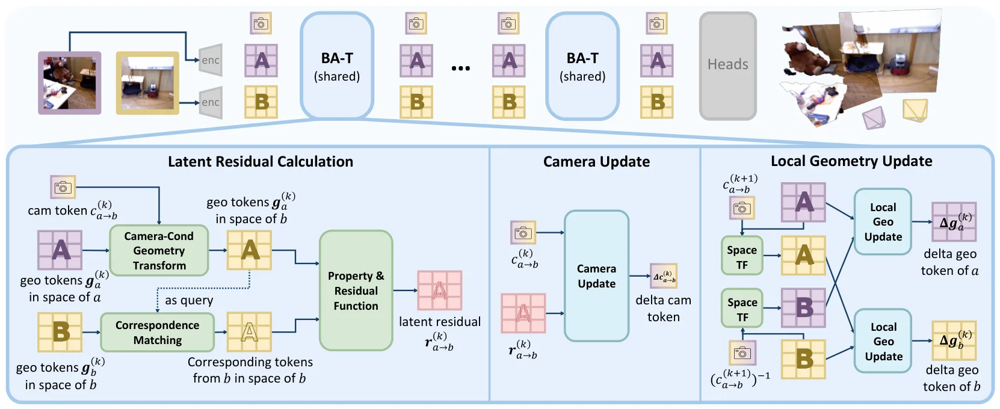
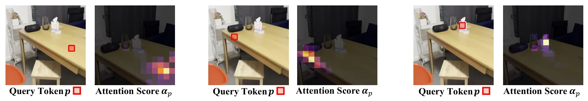
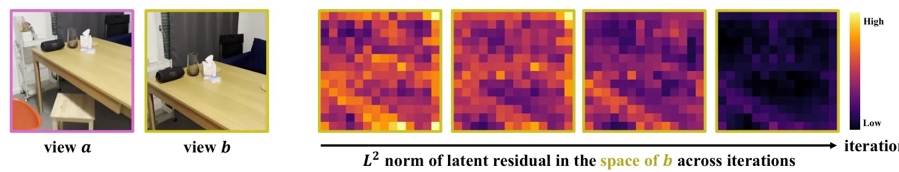
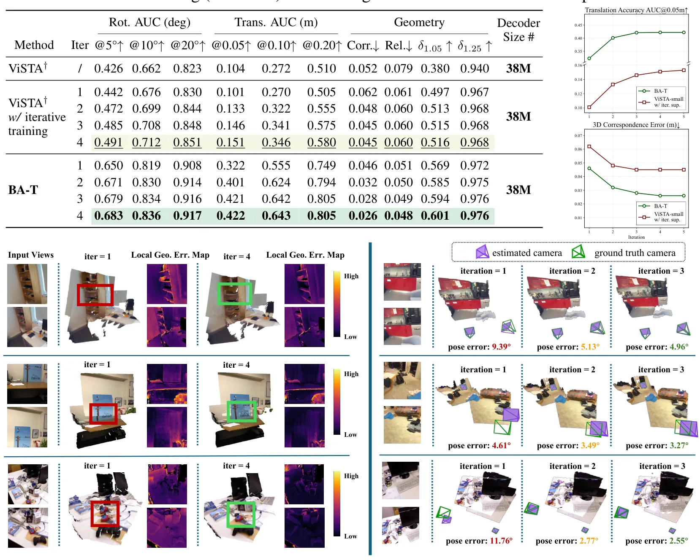
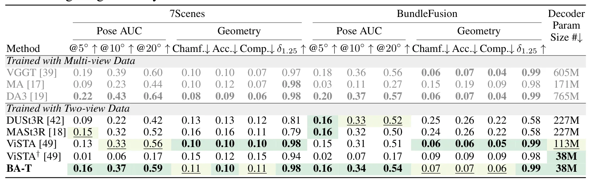

BA-T：用于两视图 Bundle Adjustment 的迭代 TransformerBA-T: An Iterative Transformer for Two-View Bundle Adjustment
直接关联 SfM/BA 与学习式重建，可启发 SLAM 局部窗口优化和神经几何前端。
一句话工作总结
把 BA 的迭代残差 refinement 机制嵌入轻量 Transformer，用于两视图位姿和重建优化。
摘要
BA-T 从经典 bundle adjustment 中 pose 与局部几何反复传播信息的机制出发，将 BA 风格结构化更新写成可重复的轻量 Transformer 层，在隐式 token 空间中基于 latent residual 逐步细化位姿和重建。实验显示其迭代过程能提升 pose 与 reconstruction accuracy，并以较少 decoder 参数达到或超过更大模型。
Feed-forward models for 3D reconstruction have achieved strong performance using deep cross-view attention to exchange information across images. However, these approaches often depend on heavy decoder stacks and lack a structured mechanism for geometry refinement, resulting in poor multi-view consistency. We address this by drawing inspiration from classical bundle adjustment (BA), which can be viewed as an iterative information propagation process between poses and local geometry. Inspired by BA, we propose BA-T, an iterative Transformer that implements BA-style structured updates as a repeatable layer in implicit token space. Instead of relying on deep attention stacks, BA-T refines predictions based on latent residual by a single lightweight layer. Experiments demonstrate that BA-T progressively improves pose and reconstruction accuracy across iterations, achieves stronger cross-view consistency than conventional decoders, and matches or surpasses substantially larger models while using only 16% of their decoder parameters. BA-T provides a compact, efficient, and structural alternative to depth-heavy attention, enabling accurate 3D reconstruction within a lightweight architecture. The code will be made publicly at https://github.com/zhangganlin/BA-T.
中文解读摘录
图表/页面预览

{kind=link}

{kind=link}

{kind=link}

{kind=link}

{kind=link}
